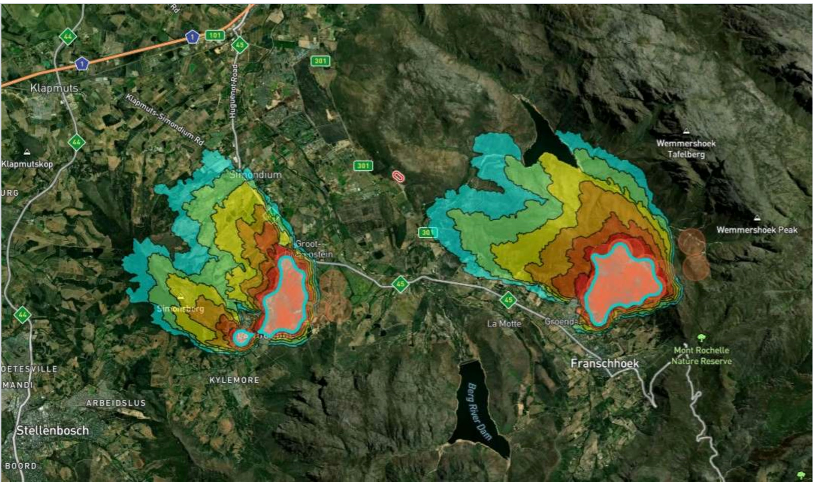

After a fire, the extent of the loss is usually established from reports written by the party making the claim. Satellite burn mapping produces the same answer independently, in high resolution, classified by severity, with the timing of ignition and extinction recorded. It does not replace the assessor. It gives them something to check against.
Exposure sits across the book, not on one property
An underwriter's problem is rarely a single farm. It is that a book written across a district shares a fire season, a fuel type and often a wind direction, so the losses do not arrive independently of one another. One bad week in one catchment can move several policies at once.
Monitoring across every insured property at the same time gives you that aggregate view during the event rather than after it, when the claims arrive one by one and the pattern only becomes visible in the run-off.
Knowing before the claim arrives
There is normally a gap between a loss occurring and an insurer hearing about it. On rural property that gap can be long, and everything that happens inside it happens without you: the site is disturbed, the evidence weathers, and the first account you receive has already been composed.
Early notification does not change the size of the fire. It changes what is still available to look at when you begin, and it lets reserves be set against something observed rather than against an estimate.

The same event, mapped from orbit rather than described from the ground.
Verification without a site visit
Much of what is insured against veld fire is a long way from the nearest adjuster, and some of it is not reachable at all for days after the event. Sending someone is expensive, slow, and on a bad season simply not possible for every claim at once.
Burn scar extent and severity mapping gives a remote first assessment that is consistent from claim to claim, which is useful both for triage and for deciding which losses genuinely need a person on site.
Underwriting is a question about history
Whether a property is a good risk is largely a question of what has burned there before, how often and how badly. A consistent fire record gathered the same way across seasons and across regions makes that a matter of evidence rather than of local knowledge and hope.
The same record is what makes a renewal conversation concrete. A grower who has invested in detection and firebreaks and a neighbour who has not currently look identical on a proposal form.
Where the fire started, and whose it was
South African veld fire liability turns on where a fire began and how it spread, and the National Veld and Forest Fire Act places duties on landowners that become relevant the moment a fire crosses a boundary. Recovery against a third party depends on establishing those facts, usually long after the ground has changed.
Ignition point, timing and progression, recorded independently of every party involved, is the kind of evidence that argument otherwise lacks. The municipal and FPA side has the same problem from the other direction.
The cheapest claim is the one that stayed small
Where an insurer can encourage or require continuous monitoring on the properties it covers, early detection shortens the time between ignition and response, and that shows up directly in the size of the losses. It is one of the few risk controls in this class that can be applied across a whole book without visiting a single property.
STRAIGHT ANSWERS
What Underwriters And Adjusters Ask Us
Can we verify a claimed loss independently?
Yes. Burn scar extent and severity are mapped from satellite observation, not from the claim, so they are produced without reference to what has been submitted.
How soon after a fire is the burn mapping available?
It follows the satellite pass and the processing rather than a site visit, so it is a matter of days rather than of scheduling an adjuster. The exact timing is worth confirming against your own turnaround expectations.
Can we assess a property's fire history before we write it?
Yes. Historical burn records over a defined area show what has burned there, how often and how severely, on a consistent basis across properties.
Can we monitor a portfolio rather than one property?
Yes. Monitored areas are shapes you define, so a book spread across a region can be watched together and seen as an aggregate during an event.
Does this help with recovery against a third party?
It provides ignition location, timing and progression from an independent source. Whether that supports a particular recovery is a legal question for your advisers, but it is usually the evidence that is missing.
Where does the underlying data come from?
Thermal infrared observation from the OroraTech constellation together with a wider network of public and commercial satellite sources, processed into detections, burn scars and severity classes. We are their reseller in Africa, and the data is theirs rather than ours.
BOOK A LIVE DEMO
See Your Own Ground.
Send us the ground you are responsible for. We will run the platform over your actual coordinates and show you what the last fire season looked like from orbit.